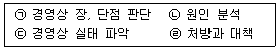

축산기능사 (2001-10-14 기출문제)
1과목: 축산개론
1. 목초의 분류 중 이용형태에 따른 분류인 것은?
- 채초용
- 1년생(한해살이)
- 방석형
- 화본과 목초
(정답률: 87%)

2. 전업축산의 단점이 아닌 것은?
- 질병의 발생률이 높다.
- 생산물 가격 파동에 위험성이 있다.
- 부산물 처리에 추가적인 비용이 적다.
- 자연재해에 위험성이 크다.
(정답률: 80%)
3. 다음 유동부채에 해당하는 것은?
- 장기차입금
- 단기차입금
- 출자금
- 외상매출금
(정답률: 65%)
4. 답리작에 알맞는 사료작물의 특성을 잘못 설명하고 있는 것은?
- 내습성이 강해야 한다.
- 추위에 강해야 한다.
- 다년생이어야 한다.
- 청초가 부족한 이른 봄에 수량이 높아야 한다.
(정답률: 53%)
5. 염소 또는 양에 허리마비병을 일으키는 병원체인 사상충을 매개하는 곤충은?
- 모기
- 파리
- 진드기
- 벼룩
(정답률: 82%)
6. 사료작물은 주로 방목이나 청예로 이용하고 있으며 이용 목적에 따라 초형도 달리하는 것이 좋다. 그러면 다음 중 방목위주의 초지에 유리한 초형으로 짝지어진 것은?
- 다발형-상번초
- 방석형-하번초
- 다발형-하번초
- 방석형-상번초
(정답률: 72%)
7. 다음 중독 원인물 중 돼지의 중독과 관계가 없는 것은?
- 고사리
- 감자
- 식염
- 수은
(정답률: 68%)
8. 병아리 사양관리에 관한 사항 중 틀린 것은?
- 첫주에는 온도를 95℉로 맞춰 주고 1주에 5℉씩 낮추어 사양한다.
- 병아리 사양에 적합한 습도는 60-70% 수준이다.
- 환기공,환기창을 설치하여 환기를 실시하며, 일광욕을 시키는 것도 좋다.
- 병아리가 커갈수록 사료 중의 단백질 함량을 높여야 한다.
(정답률: 69%)
9. 콩과 목초 재배시 뿌리 혹 박테리아(근류균)에 의해 고정되는 비료 성분은 어느 것인가?
- 질소
- 인산
- 칼륨
- 마그네슘
(정답률: 75%)
10. 다음 목초 중 추위는 물론 더위에 특히 강하여 여름철을 잘 넘기며, 척박한 토양 및 산성 토양에도 강하여 환경적응성과 지속성은 매우 강하나 이삭이 나온(출수) 후에는 빨리 굳어지고 기호성이 낮아지는 특성이 있어 세심한 예취관리가 이루어져야 하는 목초는?
- 오차드그라스
- 토올 페스큐
- 켄터키 블루그라스
- 페레니얼 라이그라스
(정답률: 57%)
11. 축산물 가격의 기능이라고 볼 수 없는 것은?
- 양축부분과 비양축부분 간의 자원이동을 유발시킨다.
- 농공간의 소득이전을 일으킨다.
- 축산물 가격의 상대적 상승은 양축농가의 소득효과를 통해서 농촌 저축의 증대를 유도한다.
- 축산물 가격의 상대적 하락은 생산자와 소비자를 동시에 보호할 수 있다.
(정답률: 80%)
12. 건유는 유선세포의 휴식과 태아발육을 도와 건강한 송아지 생산 및 산유량을 증가시키기 위해서인데 보통 건유기간으로 적당한 것은?
- 20∼30일
- 31∼41일
- 50∼60일
- 80∼90일
(정답률: 80%)
13. 방목 이용에 알맞는 목초의 초장은?
- 5 - 10㎝
- 15 - 25㎝
- 30 - 50㎝
- 55 - 65㎝
(정답률: 63%)
14. 건초에 대한 설명으로 알맞은 것은?
- 건초는 미생물의 작용에 의해 만들어진다.
- 수분함량이 15% 이하가 되도록 말린 조사료다.
- 운반과 저장이 불편하다.
- 기호성이 우수한 다즙질 사료이다.
(정답률: 87%)
15. 각종 병원균이 서식하는데 필요한 조건이 아닌 것은?
- 일광
- 온도
- 습도
- 산소유무
(정답률: 79%)
16. 다음 진단지표 중 양축농가의 기술수준과 관련된 것은?
- 수익성 지표
- 안정성 지표
- 생산력 지표
- 비용성 지표
(정답률: 65%)
17. 수단 그라스, 이탈리안 라이그라스 등의 첫번 풋베기의 설명으로 옳은 것은?
- 그루를 2∼3 cm 남기고 벤다.
- 그루를 3∼5 cm 남기고 벤다.
- 그루를 6∼10 cm 남기고 벤다.
- 그루를 10∼15 cm 남기고 벤다.
(정답률: 45%)
18. 세균성 법정전염병으로 소가 감염되면 가벼운 기침을 하고 호흡곤란을 느끼는 질병은?
- 우역
- 우폐역
- 구제역
- 탄저병
(정답률: 66%)
19. 사료작물의 기후적 선택조건으로 거리가 먼 것은?
- 생육적온
- 일조량
- 강수량
- 토양산도
(정답률: 69%)
20. 가축과 축산물의 유통과정에서 가장 중요하다고 생각되는 것은 무엇인가?
- 축산물의 집하조직
- 축산물의 질
- 축산물의 적정가격
- 축산물의 규격생산
(정답률: 63%)
2과목: 사료작물
21. 가축체형 측정에서 기갑부의 가장 높은 곳에서 지면까지 수직 높이를 잰 것을 무엇이라 하는가?
- 체장
- 체고
- 흉심
- 고장
(정답률: 82%)
22. 양돈 경영에서 생산비 중 가장 높은 비율을 차지하는 것은 무엇인가?
- 사료값
- 방역비
- 인공수정료
- 돼지수송비
(정답률: 90%)
23. 콩과 목초의 특성과 관계가 없는 것은?
- 식물성 단백질 공급원이다.
- 토양의 비옥도를 증진시킨다.
- 산성이 강한 땅에서 잘 자라지 않는다.
- 고온건조한 기후를 좋아한다.
(정답률: 50%)
24. 조수익이 1,000,000원, 경영비가 600,000원, 소득율이 90%인 사람의 소득은 얼마인가?
- 360,000원
- 400,000원
- 1,000,000원
- 1,600,000원
(정답률: 62%)
25. 젖소 비육우의 유통기구와 관계되는 것은?
- 집유소
- 보급소
- 중앙도매시장
- 사육자
(정답률: 61%)
26. 전업 낙농가의 연간 우유판매수입 3,800만원, 송아지 판매수입 1,000만원, 구비평가액 200만원, 사료비 3,350만원, 위생비 50만원, 제 재료비 50만원, 고용노임 300만원, 융자금이자 150만원, 토지임차료 100만원, 가족노동비 350만원, 자기 기본이자 50만원일 때 경영비는 얼마인가?
- 1,000만원
- 2,000만원
- 3,000만원
- 4,000만원
(정답률: 49%)
27. 비타민은 왜 공급해 주어야 하는가?
- 영양소 대사 기능 및 내병성 증진
- 에너지 발생 및 체온 유지
- 면역항체 형성
- 체 단백질 합성
(정답률: 76%)
28. 면양 거세의 목적에 적합하지 않은 것은?
- 도체의 품질개선
- 성질이 온순하여 혼합사육 가능
- 육질 향상
- 사료효율 향상
(정답률: 79%)
29. 지력을 유지 증진할 수 있을 뿐 아니라 가축의 사료를 얻을 수 있는 토지 이용방식은?
- 방목식
- 소전식
- 개량삼포식
- 자유식
(정답률: 50%)
30. 체액이나 림프액이 피하조직에 괸 상태의 피부병변을 무엇이라고 하는가?
- 기종
- 부종
- 수포
- 미란
(정답률: 64%)
31. 축산물을 주원료로 하는 가공공장의 설치에서 장소의 선정에 가장 큰 영향을 미치는 것은?
- 축산물 가격
- 자금구입 사정
- 축산물 운송비
- 가공 기술
(정답률: 75%)
32. 연맥의 특징에 관하여 바르게 설명한 것은?
- 따뜻한 지역이 원산지이므로 여름철에 잘 자란다.
- 맥류 중 목초의 특성에 가장 가깝다.
- 일반적으로 논뒷그루로 재배하기에 알맞다.
- 맥류 중 토양을 가리는 성질이 가장 적고 월동성이 뛰어나다.
(정답률: 56%)
33. 도시근교형 낙농경영의 특징이라고 볼 수 없는 것은?
- 도시 근교에 입지하여 시유용 원유를 생산 ·공급하는 데 유리한 경영형태이다.
- 토지면적이 좁고 구입사료에 의존하므로 사료의 자급률이 낮다.
- 경영의 집약도가 조방적이다.
- 대부분 착유전업형 낙농형태를 갖고 있다.
(정답률: 63%)
34. 소가 생리적으로 풀을 필요로 하는 이유가 아닌 것은?
- 소화 장애가 일어난다.
- 되새김을 하지 않고 침의 분비가 잘 안된다.
- 저급 지방산 중 초산이 증가한다.
- 유지율이 떨어진다.
(정답률: 58%)
35. 옥수수의 지상 부위에 혹 처럼 흰 껍질을 쓴 부분이 생겨 이상 비대를 하게 되며 나중에 터져서 검은 가루가 날리게 되는 병은?
- 깨씨 무늬병
- 그을음 무늬병
- 잎 마름병
- 깜부기병
(정답률: 64%)
36. 비타민(Vitamin) A의 부족으로 오는 병은 어느 것인가?
- 식도경색
- 고창증
- 요도결석
- 창상성위염
(정답률: 67%)
37. 계사를 관리하는데 있어서 주의하여야 할 사항이 아닌 것은?
- 온도
- 축사색깔
- 습도
- 환기상태
(정답률: 84%)
38. 낙농 경영의 진단 목표 중 생산성 진단시의 기술지표와 거리가 먼 것은?
- 원가계산서
- 분만횟수
- 유사비
- 착유우 마리당 년간 산유량
(정답률: 65%)
39. 양호한 사일리지 조제를 위해 재료의 자르기(절단)에 대한 설명으로 알맞은 것은?
- 수분함량이 높은 것은 짧게 자른다.
- 수분함량이 낮은 것은 짧게 자른다.
- 잎이 많고 부드러울 때에는 짧게 자른다.
- 거칠고 여물 때에는 길게 자른다.
(정답률: 73%)
40. 균일돈 생산을 위한 사료급여법으로 적당한 것은?
- 자돈기 때 위축되지 않게 한다.
- 가끔씩 제한급여를 시킨다.
- 가능한 입붙이사료는 급여하지 않는다.
- 체중이 적은 자돈은 복부쪽 유두를 빨게 한다.
(정답률: 61%)
3과목: 축산경영
41. 육용종 소 품종에 해당되는 것은?
- 로우드 아일랜드
- 오-오 핑턴
- 앵거스
- 오골계
(정답률: 78%)
42. 젖소 번식장애의 원인 중에 대표적인 것은?
- 태반의 정체
- 자궁의 염좌
- 난소낭종
- 산욕열
(정답률: 85%)
43. 다음 중 원산지가 동양종인 닭은?
- 레그혼
- 코친
- 플리머스록
- 미노르카
(정답률: 77%)
44. 농업경영 중에서 고정자본을 가장 많이 필요로 하는 경영은?
- 양계경영
- 양돈경영
- 낙농경영
- 번식돈경영
(정답률: 72%)
45. 우리나라 한우의 생산 및 유통측면에서의 현황과 문제점을 열거한 것 중 잘못된 것은?
- 조사료 생산기반이 양호하여 배합사료 의존도가 낮음에도 불구하고 사육규모가 영세하다.
- 한우 개량체계가 미흡하여 외국 육용우에 비해 한우의 생산성이 떨어진다.
- 가축시장이 영세하고 그 기능이 취약하여 농가문전 거래가 일반화되어 있다.
- 소값 하락시 타격이 가장 큰 송아지 생산농가에 대한 보호장치가 미흡하다.
(정답률: 51%)
46. 돼지 품종 중 미국원산으로 어깨에 백색띠가 있는 품종은?
- 버이크셔종
- 요오크셔종
- 햄프셔종
- 탐워스종
(정답률: 69%)
47. 축산물유통의 물적 유통기능이 아닌 것은?
- 수송기능
- 저장기능
- 가공기능
- 등급화
(정답률: 81%)
48. 엔실리지 발효에 관계하는 유익한 균으로 저장성을 높여 주는 혐기성 균은?
- 젖산균
- 고초균
- 대장균
- 방선균
(정답률: 80%)
49. 낙농경영에서 주산물 수입은?
- 우유수입
- 송아지수입
- 구비수입
- 노폐우수입
(정답률: 80%)
50. 조방적(組放的)으로 관리가 이루어지는 초지의 종류는?
- 목야지(牧野地)
- 목초지(牧草地)
- 채초지(採草地)
- 간이초지(簡易草地)
(정답률: 47%)
51. 다음 중 경영진단의 순서가 바르게 된 것은?

- ㉡ - ㉢ - ㉠ - ㉣
- ㉠ - ㉡ - ㉣ - ㉢
- ㉢ - ㉡ - ㉠ - ㉣
- ㉢ - ㉠ - ㉡ - ㉣
(정답률: 69%)
52. 내부 기생충(유충류) 중 흡충류에 속하는 것은?
- 벼룩
- 디스토마
- 이
- 모기
(정답률: 70%)
53. 엔실리지용 옥수수의 좋은 품종 선택조건에 해당되지 않는 것은?
- 추위에 강할 것
- 건물수량이 많을 것
- 종실생산이 많을 것
- 병충해에 강할 것
(정답률: 68%)
54. 다음 낙농경영에 있어 고정자산에 해당하는 것은?
- 사료비
- 외상매출금
- 착유우
- 소농기구
(정답률: 62%)
55. 감가상각비를 계산하는데 필요하지 않는 것은?
- 제작회사의 신뢰도
- 기초가격
- 잔존가격
- 내용연수
(정답률: 87%)
56. 사일리지를 조제하는 가장 간단한 방법으로 재료를 지상 위에 퇴적하여 발효시키는 방법의 사일로는?
- 원통 사일로
- 트렌치 사일로
- 벙커 사일로
- 스태크 사일로
(정답률: 61%)
57. 준비 방목의 설명으로 알맞은 것은?
- 방목하기 전에 가축을 가까운 초지에서 점차 시간을 늘려 가면서 목초를 뜯어 먹게 하는 것을 말한다.
- 목초의 초장이 20-25cm에 방목을 실시하는 것을 말한다.
- 화본과 목초가 무성하게 자라는 것을 억제하는 방법으로서 좀 일찍 방목하는 것을 말한다.
- 가축의 발굽에 의한 목초의 피해를 줄이기 위해 미리 적은 수의 가축을 방목시키는 것을 말한다.
(정답률: 68%)
58. 초지 조성시 토양개량제로 석회를 살포하는 주 목적은?
- 토양산도 교정
- 유기물 보충
- 인산질 보충
- 토양 수분 유지
(정답률: 81%)
59. 사초의 분류 방식 중 식물의 꽃차례나 외부형태 및 세포학, 생화학, 생리학 등의 지식을 총동원하여 분류하는 방식은?
- 형태에 의한 분류
- 생존년한에 의한 분류
- 이용형태에 의한 분류
- 식물학적 분류
(정답률: 76%)
60. 목초의 생육은 기상요인에 의해 많은 영향을 받는다. 따라서 초지조성을 위한 초종을 선택하기 전에 기상요인들을 먼저 분석하고 이해하는 것이 필요하다. 그러면 다음 중 목초와 기상요인과의 관계를 가장 바르게 설명한 것은?
- 목초의 생육적온은 초종과 품종에 관계없이 일정하다.
- 목초의 수분요구량은 작물보다 낮고, 수분효율은 높다.
- 북방형(한지형) 목초의 기원은 아프리카가 대부분이고 고온다습을 좋아한다.
- 목초의 생육은 총강우량도 중요하지만 강우량의 계절적 분포가 더욱 중요하다.
(정답률: 65%)